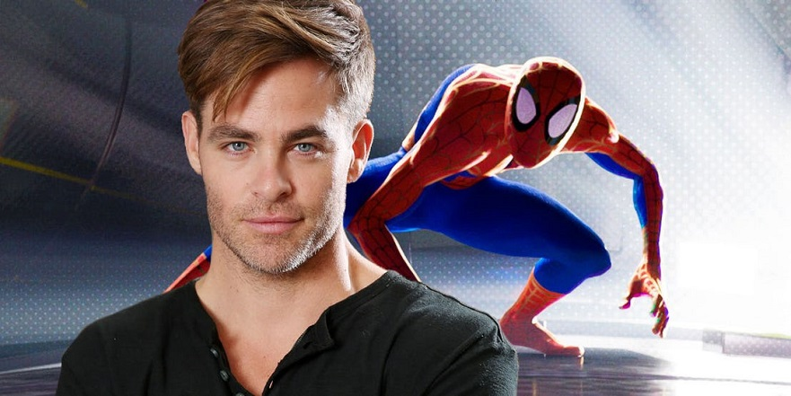

To make sure that readers know we’re not simply making this up, or claiming a ‘theory’ as fact, Into the Spider-Verse makes this fact clear. As Spider-Man does battle with Green Goblin in the test chamber, the film also shows Kingpin’s scientists working to analyze the reaction. The experiment is being monitored on-site by both Kingpin and Dr. Olivia Octavius, with the latter heard shouting over the dimensional earthquakes that she sees "multiple dimensions opening... four… five different dimensions. It’s unstable!" As the line is delivered, Kingpin looks to a nearby monitor for an illustration of the dimensions collapsing into their own. Fortunately for fans, the realities in question are clearly labeled.
The movie and its creators stick as close to the comic book source material as possible, whenever possible, so it should come as no surprise to find that these are the real alternate dimensions to which each of these heroes ‘officially’ belong in Marvel canon. The science confirms that Peter B. Parker - the superhero who lost his money, his love, and his drive to be a hero as he moved into middle age - is the Spider-Man plucked out of Marvel’s main universe.
Since the movie’s realities and the identity of a ‘true’ Spider-Man are only meaningful within the movie’s fiction (you won’t see Marvel Comics making the movie’s future canon) the true purpose or meaning of Chris Pine’s Spider-Man is worth some discussion. After all, if he’s the younger version of the same physical person as the ‘real’ Spider-Man, but has already lived a different life, what version is he supposed to be? And to those who would say he’s simply the “Ultimate” version, as in the comics, there’s a problem. The version of Spider-Man who inspired Miles Morales was killed at the age of sixteen, not twenty-six. A small detail, but a clear choice to avoid canon.The best, or at least most interesting thing to consider is that Chris Pine’s Spider-Man isn’t just ‘perfect,’ but seems to have lived through… well, just about every facet of the Spider-Man mythology. The suits and memorabilia in his Spider-Man lair pull from decades of Spider-Man lore, right up to the costume seen in the new Spider-Man video game for the PlayStation 4. Based on his life and legacy, it wouldn’t be exaggeration to say that Pine’s Spider-Man is an embodiment of Spider-Man as an icon, a product, and a legacy. He isn’t the real Spider-Man, he’s what the world thinks of when they think of Spider-Man… whether or not it would all be possible for a man barely through his thirties. He also doesn’t have a middle name, since... who knew Peter Parker has a middle name?
It may be a more philosophical exercise than some viewers will be interested in, but it’s sure to feel truer and truer with each new Marvel movie installment, reboot, and franchise. The original Peter suffered the loss of Aunt May... which was inevitable given her original age. The original Peter lost his wife over fears of being a father... which makes sense, given Peter’s own childhood. But in the end, the original Peter still got the chance to grow with age, and give things a second chance. Even if he was a far cry from the youthful, baby-faced, and leading-man blond version of himself he saw plastered on billboards upon arrival in Miles' world.
Compare that to the famous, beloved Spider-Man of Miles’ reality, and the hero's fate says more about him as an icon than as a regular human being. He never had to worry about growing old, because he never got to. His collection of gadgets and products from a lifetime of past adventures far exceeds that of the original Peter, even though it defies the limitations or logic of time. Still, he was a hero the world loved without knowing personally, and inspired Miles to believing that the person beneath the Spider-Man mask mattered less than the mask itself.